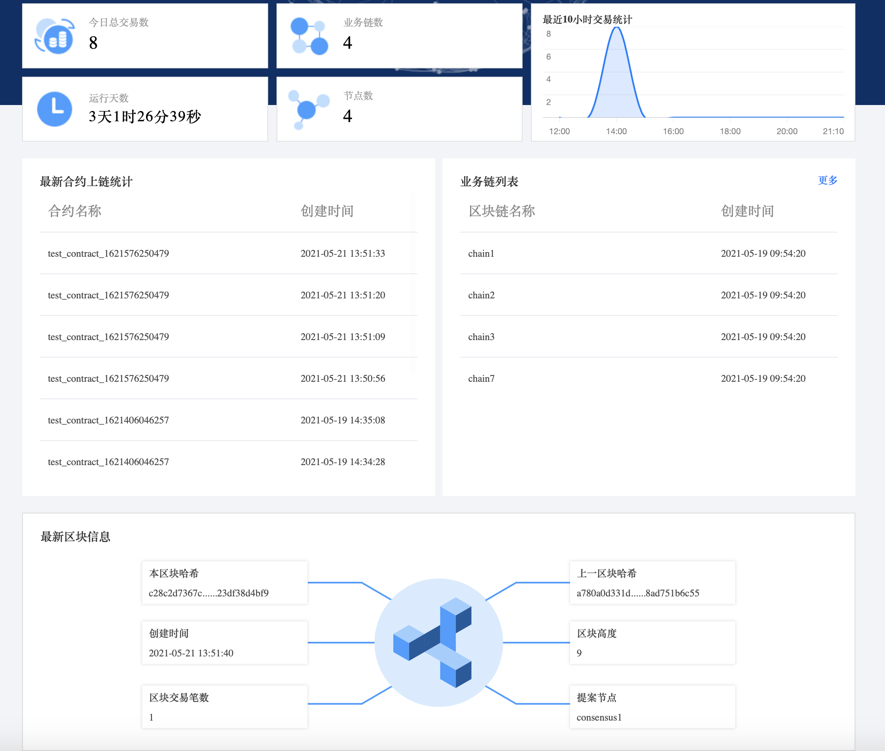
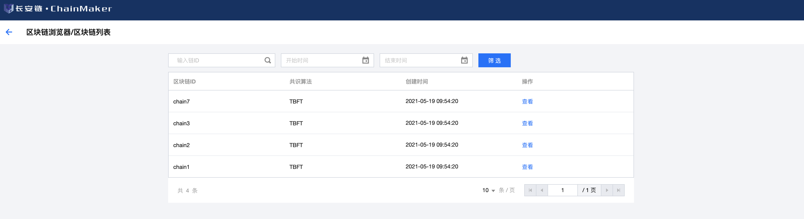
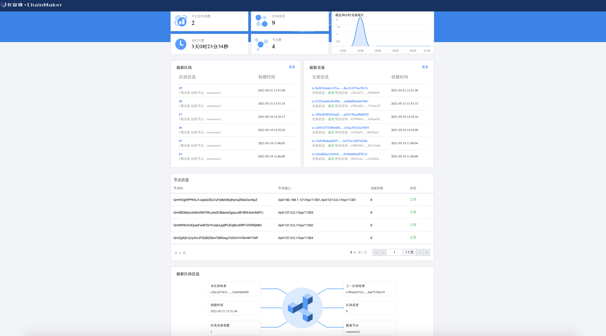
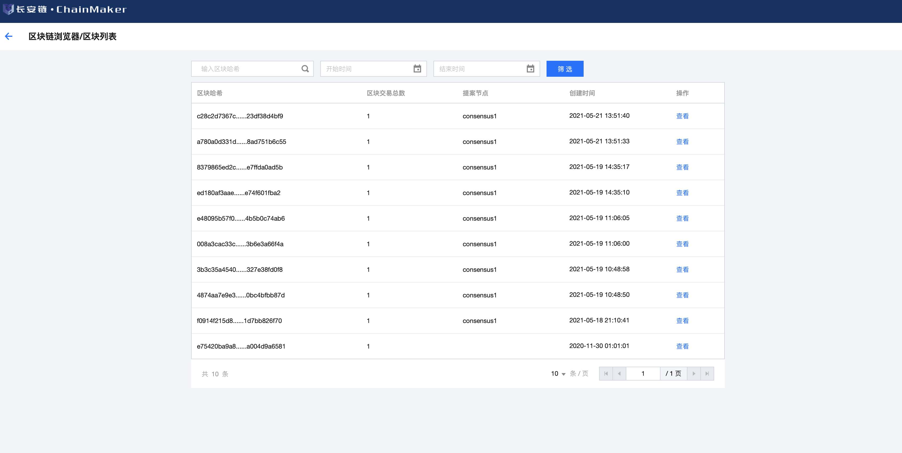
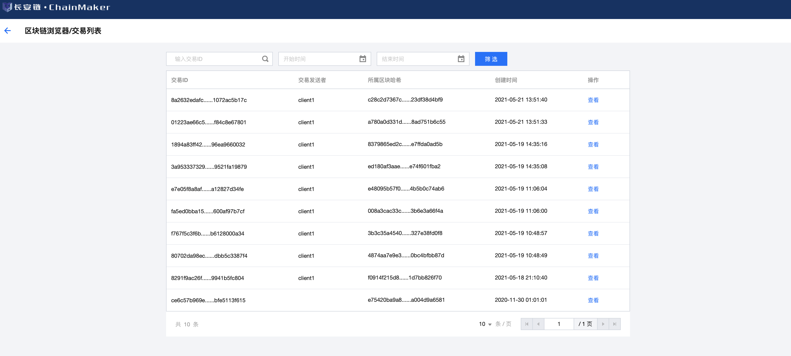
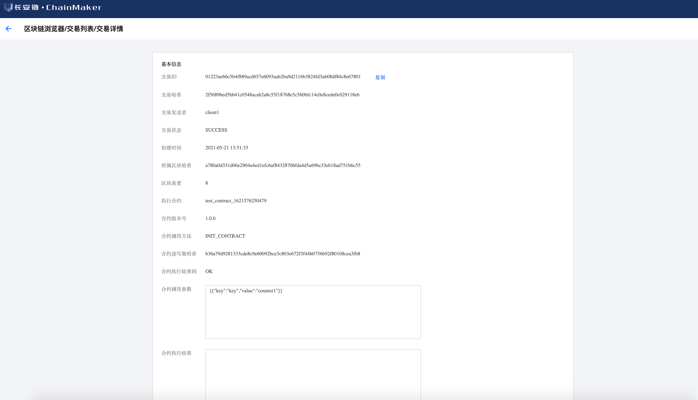

7. 区块链浏览器¶
7.1. 概述¶
区块链浏览器提供了实时浏览、查询区块链信息和统计信息的功能。主要由前端（Web展示）、后端及数据库三部分组成。数据库采用的是MySQL，后端采用go语言开发，前端使用的是react框架。
7.2. 安装指南¶
7.2.1. 环境依赖¶
golang
版本为1.15或以上
下载地址：https://golang.org/dl/
若已安装，请通过命令查看版本：
$ go version
mysql
版本为5.6或以上
下载地址：https://dev.mysql.com/downloads/installer/
若已安装，请通过命令查看版本：
$ mysql -V
npm
npm版本为6.14.13或以上
node版本为v14.17.0或以上
下载地址：https://nodejs.org/en/
若已安装，请通过命令查看版本：
$ npm -V
$ node -V
nginx
版本为1.18.0或以上
下载地址：http://nginx.org/en/download.html
若已安装，请通过命令查看版本：
$ nginx -V
安装完成后，启动nginx，命令如下：
$ service nginx start
7.2.2. 数据库初始化¶
数据库sql文件保存在docs目录中（chainmaker-browser-db.sql）,请执行sql文件，在数据库中创建表（数据库名自行指定，不限制）。
7.2.3. 后端模块部署¶
7.2.3.1. 前置环境¶
浏览器部署需要依赖一个ChainMaker运行环境。具体的ChainMaker环境安装部署请参考对应的文档。
7.2.3.2. 代码下载¶
下载地址： https://git.chainmaker.org.cn/chainmaker/chainmaker-explorer
将指定版本代码(包括子模块chainmaker-sdk-go)下载到本地，切换子项目chainmaker-sdk-go的版本为chainmaker的对应版本
7.2.3.3. 配置调整¶
浏览器配置文件：config.yml，它的配置内容包括四部分，以下是详细说明：
web:
address: 0.0.0.0 # Web监听网卡地址
port: 9999 # Web监听端口
cross_domain: true # 是否开启跨域
node:
update_time: 300 # 链和节点更新时间
sync_time: 60 # 节点断开连接时间和新增链时间
chain_id: chain1 # chainId，所在链ID（链ID是链的唯一标识）
org_id: wx-org1.chainmaker.org # 所在组织
tls: true # 是否开启TLS
tls_host: chainmaker.org # TLS域名
ca_paths: configs/crypto-config/wx-org1.chainmaker.org/ca # CA证书所在路径（即文件夹，建议绝对路径）
remotes: 127.0.0.1:12301 # 节点地址，格式：IP:PORT
user:
priv_key_file: configs/crypto-config/wx-org1.chainmaker.org/user/admin1/admin1.tls.key # 管理员私钥（具体位置，建议绝对路径）
cert_file: configs/crypto-config/wx-org1.chainmaker.org/user/admin1/admin1.tls.crt # 管理员证书（具体位置，建议绝对路径）
db:
url: (127.0.0.1)/chainmaker_browser_db # 数据库地址，格式：(IP)/DBName
user: chainmaker # 数据库登录用户
passwd: Baec&chainmaker # 数据库登录密码
log:
log_level_default: INFO # 默认日志级别
log_levels:
core: INFO
net: INFO
file_path: ../log/web.log # 日志路径
max_age: 365 # 日志最长保存时间，单位：天
max_size: 100 # 日志最长保存时间，单位：天
rotation_time: 1 # 日志滚动时间，单位：小时
log_in_console: false # 是否展示日志到终端，仅限于调试使用
show_color: true # 是否打印颜色日志
7.2.3.4. 启动运行¶
可通过startup.sh自拉起后台，脚本中需要配置对应的配置文件所在路径及启动文件，请按照实际情况进行设置，如下：
BROWSER_BIN="chainmaker-browser.bin"
cd ../src
go build -o ${BROWSER_BIN}
mv ${BROWSER_BIN} ../scripts
cd ../scripts
echo "Success build chainmaker-browser.bin"
CONFIG_PATH="/opt/chainmaker/explorer-backend/browser-backend/configs/"
nohup ./${BROWSER_BIN} -config ${CONFIG_PATH} >output 2>&1 &
可通过shutdown.sh将该服务停掉，对应的，如果启动文件有变化，也需要在脚本中进行调整，如下：
BROWSER_BIN="chainmaker-browser.bin"
7.2.4. 前端模块部署¶
7.2.4.1. 代码下载¶
下载地址： https://git.chainmaker.org.cn/chainmaker/chainmaker-explorer-web
7.2.4.2. 配置调整¶
进入代码public目录，修改config.js中的前端请求地址，可根据后台地址自行配置，如下所示：
window.oURL = 'http://192.168.1.131:9999/chainmaker';
7.2.4.3. 启动运行¶
进入前端代码最外层目录执行以下命令：
$ npm install
打包构建前端代码：
$ npm run build
将打包构建好的build包里index.html页面的路径配置到nginx中，打开nginx的配置（默认路径为：/etc/nginx/nginx.conf），修改以下标注的配置：
listen 8080; #监听端口
server_name localhost; #ServerName
location / {
root /data/cmb-front/dist; #index.html所在路径
index index.html; #index.html文件
try_files $uri $uri/ /index.html; #跳转需要
}
location ^~/chainmaker/ { #后端跳转过滤字段
proxy_pass http://127.0.0.1:8080; #跳转到后端的请求
}
其中，若前端访问地址直接请求后端，则可不配置后端跳转的location部分。
配置完成后重启nginx即可生效，重启命令如下
$ service nginx restart
7.3. 使用手册¶
7.3.1. 浏览器首页¶
7.3.1.1. 首页检索¶
首页提供了链检索功能，在检索框输入chainId，点击查询后会跳转到检索后的链列表页。如图所示：
7.3.1.2. 统计数据¶
首页可以查看交易统计、合约列表、链数量统计、最新链列表和最新区块信息等内容，如图所示：
7.3.2. 链列表页¶
链列表页可以查看所有链的基本信息，点击对应查看按钮，可以查看每条链的详细信息，如图所示：
7.3.3. 链详情页¶
7.3.3.1. 链详情页检索¶
链详情页提供了区块和交易的检索功能，输入区块Hash或者交易ID，点击查询可以跳转对应的区块或者交易详情页，如图所示：
7.3.3.2. 链详情页统计数据¶
链详情页可以查看该链的交易统计、最新区块列表、最新交易列表、节点统计、和最新区块信息等内容，如图所示：
7.3.4. 区块列表页¶
区块列表页可以查看该链的所有区块的列表的基本信息，如图所示：
7.3.6. 交易列表页¶
交易列表页可以查看该链的所有交易的列表的基本信息，如图所示：
7.3.7. 交易详情页¶
交易详情页可以查看该交易的全部信息，如图所示：
